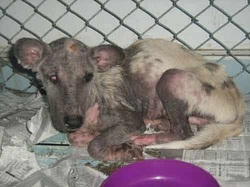

By Sherwin Castillo
Reposted from http://www.mefindhome.org
One way you can do this is by sparing some room in your home and fostering a shelter cat or dog.
The PAWS shelter, after all, does not have infinite space and it constantly needs to make some for new rescues and for the animals that need its help the most.
This is also an opportunity for anyone who wants some animal companionship but may not be able to commit to a long-term ownership/guardianship of a cat or a dog.
Most shelter cats and dogs have been through some painful experiences being sick or being the object of unimaginable cruelty from humans. Hence, in a lot of instances, rehabilitation through continued human companionship (of the un-cruel kind) is required to bring back the animals' trust in humanity.
This will increase the chances of making their transition from a traumatic home to a loving home as smooth as possible.
Foster homes are also sought for kittens, puppies or sick animals that need constant attention. There are over a hundred cats and dogs at the shelter at any given time; a certain percentage of which are sick or are too young to be able to survive on their own without constant loving supervision.
The typical rescued or abandoned cat or dog will be underweight or sick. We need foster homes that are willing to bring them back to a good state of health to increase their chances of getting adopted. The above picture of William is perhaps one of the extreme rescue cases as far as state of health is concerned.
Unfortunately, finding a dog in this heart-wrenching state, out there in the streets, is not as rare as one would wish.
PAWS needs your help in helping these animals by taking care of them until suitable permanent homes are found for them, or, in the case of kittens, puppies and sick animals, until they grow old enough or are nursed back to health enough to survive a shelter environment.
No shelter will beat the care a real loving home environment can give a rescued cat or dog.
• Do you have spare room in your home?
• Can you keep sick cats or dogs, kittens or puppies sheltered indoors?
• Will you have time to spend interacting with your wards?
• Will you be willing to administer medicines when necesary?
• Will you be able to bring it to the vet when the need arises?
PAWS will certainly provide veterinary services and will provide medicines, cat food and dog food, if it has some to spare. Please remember that the organization is solely dependent on donations and money it raises at fund-raising events and that there may be occasions of cat and dog food and medicine shortages.
By all means get in touch with us right away! Attend a volunteer orientation or schedule a visit to the shelter to meet some of PAWS' adoption counselors. We do still need to assess your capacity as a foster parent.
If you've had experience taking care of pets in the past and have a passion for it, then I doubt if we're going to have problems. And even if you're new to pet care, as long as you are eager to learn, I believe there may be a way to work things out. Many volunteers will be willing to guide you through it all.
All we ask is that you treat your foster cats or dogs as if they were your own. I would also urge (not require) you to become proactive in finding forever homes for them. That, after all, is our ultimate goal, isn't it?--- To get all the homeless animals home!
Note: After your foster baby gets adopted, there will always be more waiting for foster care!
Below are photos of Rex, which fellow animal welfare advocate Alya Honasan fostered from being a bag of bones to a bag of happiness and then found a wonderful forever home for him!
There are other ways that you can help out. Adoption is but one aspect of the advocacy. Fostering is another. Become a volunteer and find out more about how you can help. Let's all work together for the animals!